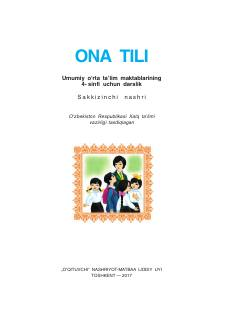

OT4-sinf o'quvchilari uchun ona tili fanidan rasmiy darslik.
Mazkur darslik umumiy o'rta ta'lim maktablarining 4-sinfi o'quvchilari uchun mo'ljallangan bo'lib, ona tili fanidan amaliy mashqlar, matnlar va qoidalarni o'z ichiga oladi. Kitobda o'quvchilarning savodxonligini oshirish, gap va uning tuzilishi, tinish belgilari hamda nutq madaniyatini rivojlantirishga alohida e'tibor qaratilgan.